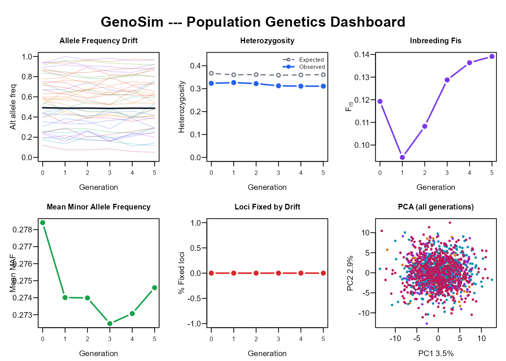
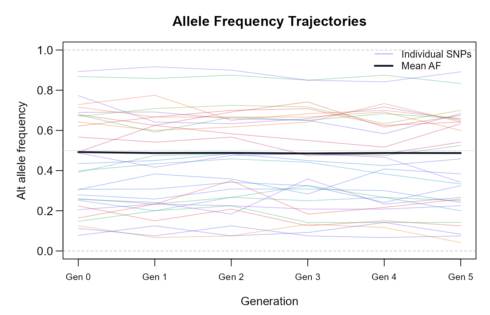
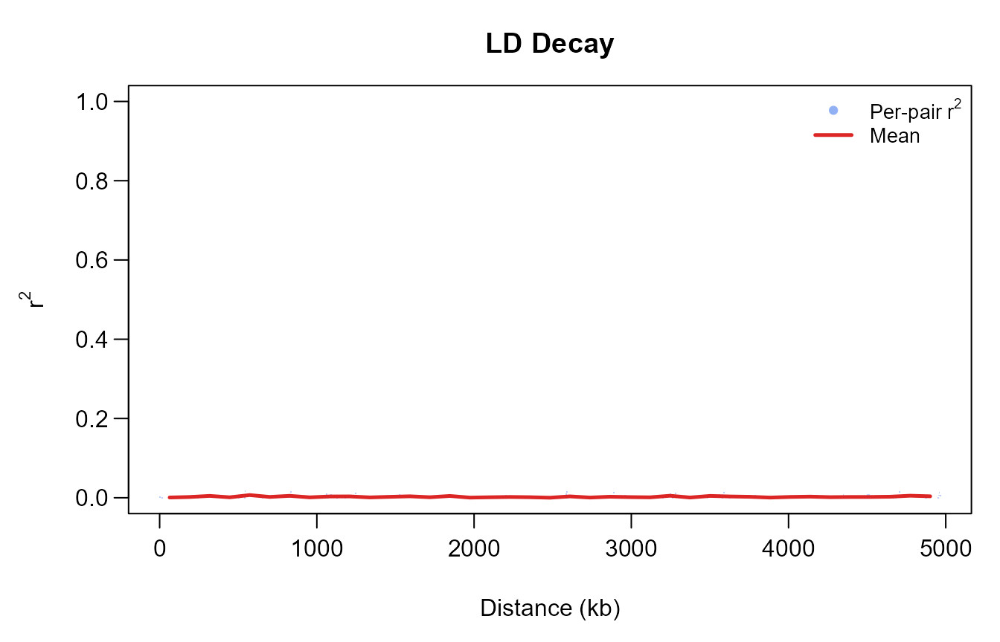
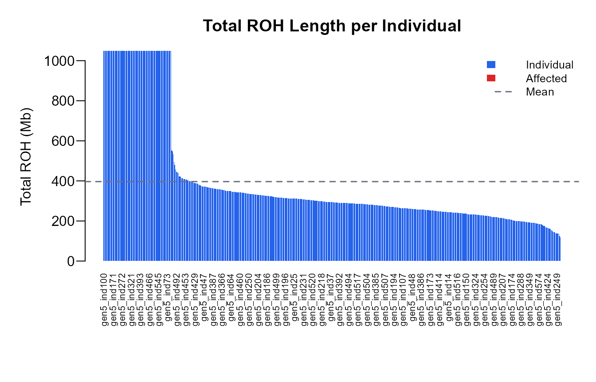
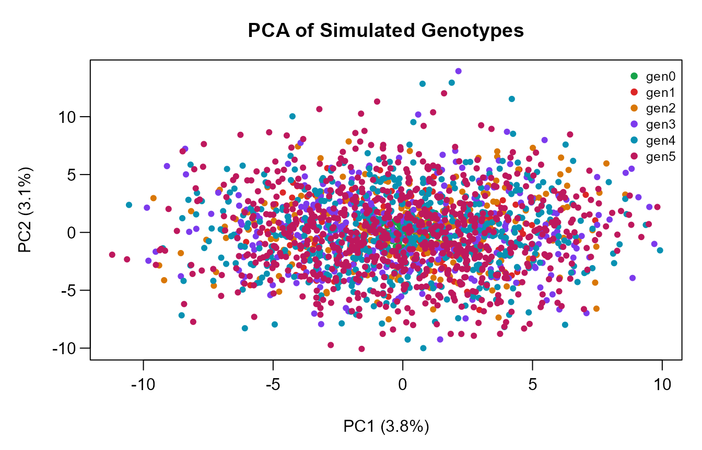
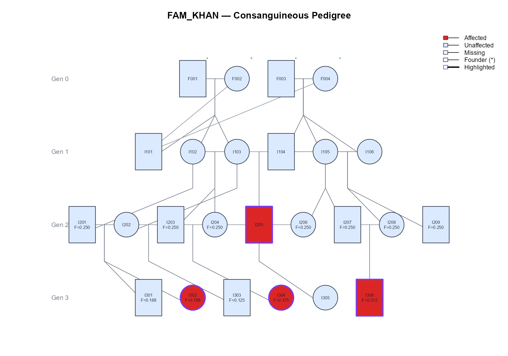
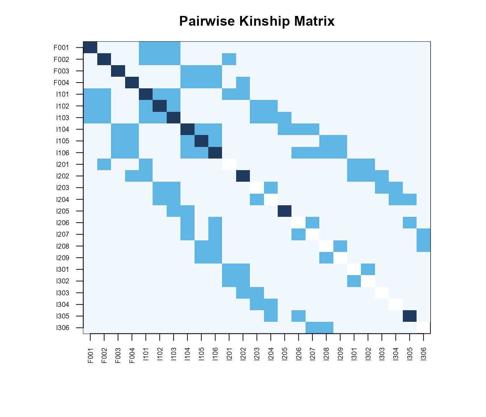
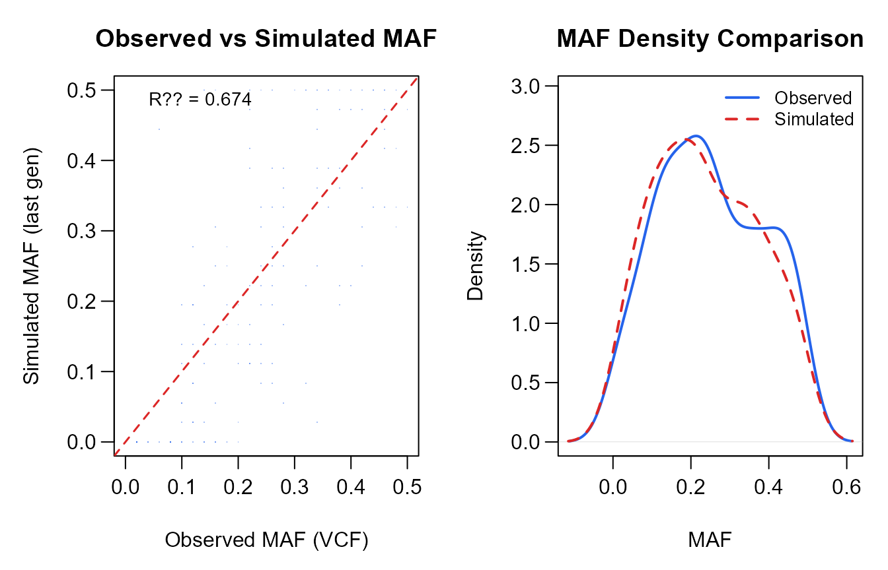

vignettes/introduction.Rmd
introduction.RmdGenoSim addresses a critical bottleneck in clinical and population genetics research: the shortage of human NGS genotype data due to ethical, budgetary, and regulatory constraints. It provides a complete forward-time simulation pipeline that produces biologically realistic diploid SNP data across up to 10 generations.
Two simulation modes are available:
| Mode | Function | When to use |
|---|---|---|
| Population | simulate_population() |
No prior data; generate from allele frequencies |
| Pedigree | simulate_from_pedigree() |
Real family VCFs + pedigree structure available |
# From a local zip file:
install.packages("GenoSim_1.0.0.tar.gz", repos = NULL, type = "source")
# Or via remotes from GitHub (once published):
# remotes::install_github("example/GenoSim")The simplest use case: generate 100 founder individuals with 1,000 SNPs and run 5 generations of neutral evolution.
sim <- simulate_population(
n_founders = 100,
n_snps = 1000,
n_generations = 5,
chromosomes = 1:5,
seed = 42,
verbose = FALSE
)
# Each list element is a dosage matrix [n_indiv x n_SNPs]
names(sim$genotypes)
#> [1] "gen0" "gen1" "gen2" "gen3" "gen4" "gen5"
dim(sim$genotypes[["gen0"]])
#> [1] 100 1000
sim$summary_stats[, c("generation", "n_individuals",
"obs_heterozygosity", "mean_maf", "inbreeding_fis")]
#> generation n_individuals obs_heterozygosity mean_maf inbreeding_fis
#> 1 0 100 0.36329 0.27533 0.00339
#> 2 1 150 0.36751 0.27291 -0.01640
#> 3 2 225 0.36355 0.27357 -0.00488
#> 4 3 336 0.36472 0.27425 -0.00918
#> 5 4 504 0.36670 0.27157 -0.01830
#> 6 5 756 0.36227 0.27351 -0.00326The inbreeding_fis column tracks the Wright
statistic:
Under neutral panmictic evolution with no inbreeding, .
Set inbreeding_F = 0.125 to model a first-cousin mating
system:
sim_inbred <- simulate_population(
n_founders = 80,
n_snps = 1000,
n_generations = 5,
inbreeding_F = 0.125,
n_eff = 60,
chromosomes = 1:5,
seed = 2024,
verbose = FALSE
)
sim_inbred$summary_stats[, c("generation","obs_heterozygosity",
"exp_heterozygosity","inbreeding_fis")]
#> generation obs_heterozygosity exp_heterozygosity inbreeding_fis
#> 1 0 0.32330 0.36709 0.11929
#> 2 1 0.32638 0.36046 0.09453
#> 3 2 0.32203 0.36113 0.10826
#> 4 3 0.31251 0.35869 0.12874
#> 5 4 0.31082 0.35990 0.13635
#> 6 5 0.31082 0.36105 0.13912
sim_sel <- simulate_population(
n_founders = 200,
n_snps = 2000,
n_generations = 8,
selection_s = 0.05, # positive selection on alt allele
n_eff = 150,
chromosomes = 1:10,
seed = 999,
verbose = FALSE
)
plot_dashboard(sim_inbred, pca_result = run_pca(
do.call(rbind, sim_inbred$genotypes), n_pc = 5
))
plot_af_trajectory(sim_inbred, n_snps_show = 30)
ld <- compute_ld(
sim$genotypes[[1]], sim$snp_map,
max_snps = 200, max_dist_bp = 5e6
)
cat(sprintf("Pairs: %d | Mean r²: %.4f\n", nrow(ld), mean(ld$r2, na.rm=TRUE)))
#> Pairs: 201 | Mean r²: 0.0024
plot_ld_decay(ld)
roh <- detect_roh(
sim_inbred$genotypes[[6]],
sim_inbred$snp_map,
min_snps = 10,
min_length_bp = 500000
)
nrow(roh$roh_segments)
#> [1] 10954
all_genos <- do.call(rbind, sim$genotypes)
pca <- run_pca(all_genos, n_pc = 10)
cat(sprintf("PC1: %.1f%% PC2: %.1f%% PC3: %.1f%%\n",
pca$variance_pct[1], pca$variance_pct[2], pca$variance_pct[3]))
#> PC1: 3.8% PC2: 3.1% PC3: 3.0%
fst <- compute_fst(sim$genotypes)
print(fst)
#> gen_from gen_to mean_fst median_fst
#> 1 0 1 0.07283 0.04086
#> 2 1 2 0.07264 0.04224
#> 3 2 3 0.08270 0.04732
#> 4 3 4 0.08193 0.04399
#> 5 4 5 0.08301 0.04829
div <- diversity_metrics(sim)
print(div)
#> generation nei_gene_div seg_sites_frac watterson_theta
#> 1 0 0.36452 1 0.19315
#> 2 1 0.36158 1 0.17907
#> 3 2 0.36179 1 0.16691
#> 4 3 0.36140 1 0.15643
#> 5 4 0.36011 1 0.14708
#> 6 5 0.36109 1 0.13880GenoSim ships a complete example dataset: 25-member family FAM_KHAN across 4 generations with 4 affected individuals and consanguineous matings.
ped <- read_pedigree(example_ped_path(), verbose = FALSE)
summarise_pedigree(ped)
#> === Pedigree Summary ===
#> Individuals : 25
#> Families : FAM_KHAN
#> Per generation:
#> Gen 0: 4 (4 founders)
#> Gen 1: 6 (0 founders)
#> Gen 2: 9 (0 founders)
#> Gen 3: 6 (0 founders)
#> Sex: 12 male | 13 female | 0 unknown
#> Phenotype: 21 unaffected | 4 affected | 0 missing
#> Inbreeding F: mean=0.1175 | max=0.3750
vcf <- read_vcf_cohort(example_vcf_dir(), verbose = FALSE)
cat(sprintf("Loaded: %d individuals × %d SNPs\n",
nrow(vcf$geno_matrix), ncol(vcf$geno_matrix)))
#> Loaded: 25 individuals × 200 SNPs
ped_sim <- simulate_from_pedigree(
vcf_cohort = vcf,
pedigree = ped,
extra_generations = 3,
mut_rate = 1e-4,
seed = 42,
verbose = FALSE
)
ped_sim$summary_stats[, c("generation","n_individuals",
"obs_heterozygosity","mean_maf","source")]
#> generation n_individuals obs_heterozygosity mean_maf source
#> 1 0 4 0.34625 0.22062 observed_pedigree
#> 2 1 6 0.33833 0.21333 observed_pedigree
#> 3 2 9 0.20389 0.19583 observed_pedigree
#> 4 3 6 0.26333 0.18917 observed_pedigree
#> 5 4 9 0.28278 0.16673 synthetic
#> 6 5 12 0.21750 0.17215 synthetic
#> 7 6 18 0.19333 0.16090 synthetic
affected <- ped$individual_id[ped$phenotype == 2]
plot_pedigree_tree(ped, highlight_ids = affected,
title = "FAM_KHAN — Consanguineous Pedigree")
plot_kinship_heatmap(ped)
plot_af_comparison(vcf, ped_sim)
export_vcf(sim, generation = c(0, 5), out_dir = "output/vcf/")
export_plink(sim, generation = 5, out_prefix = "my_sim", out_dir = "output/plink/")
export_csv(sim, out_dir = "output/csv/")
# Produces:
# genosim_genotypes_all_generations.csv
# genosim_summary_stats.csv
# genosim_allele_freqs.csv
# genosim_snp_map.csv
sessionInfo()
#> R version 4.5.2 (2025-10-31 ucrt)
#> Platform: x86_64-w64-mingw32/x64
#> Running under: Windows 10 x64 (build 19045)
#>
#> Matrix products: default
#> LAPACK version 3.12.1
#>
#> locale:
#> [1] LC_COLLATE=English_United States.utf8
#> [2] LC_CTYPE=English_United States.utf8
#> [3] LC_MONETARY=English_United States.utf8
#> [4] LC_NUMERIC=C
#> [5] LC_TIME=English_United States.utf8
#>
#> time zone: Asia/Karachi
#> tzcode source: internal
#>
#> attached base packages:
#> [1] stats graphics grDevices utils datasets methods base
#>
#> other attached packages:
#> [1] GenoSim_1.0.0
#>
#> loaded via a namespace (and not attached):
#> [1] digest_0.6.39 desc_1.4.3 R6_2.6.1 fastmap_1.2.0
#> [5] xfun_0.57 cachem_1.1.0 knitr_1.51 htmltools_0.5.9
#> [9] rmarkdown_2.31 lifecycle_1.0.5 cli_3.6.5 sass_0.4.10
#> [13] pkgdown_2.2.0 textshaping_1.0.5 jquerylib_0.1.4 systemfonts_1.3.2
#> [17] compiler_4.5.2 rstudioapi_0.18.0 tools_4.5.2 ragg_1.5.2
#> [21] bslib_0.11.0 evaluate_1.0.5 yaml_2.3.12 otel_0.2.0
#> [25] jsonlite_2.0.0 rlang_1.2.0 fs_2.1.0